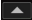
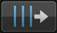
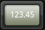

Trabajo de preparación
BPM & Retícula
Ajustando de antemano y bien la retícula (y BPM), los cues, bucles y hot cues se pueden establecer en las posiciones de tiempos de compás. (Función de cuantización)
 Para detalles de las funciones de reproducción usando la retícula y BPM (sincronización, mezcla, etc.), consulte el manual de instrucciones de la unidad DJ respectiva.
Para detalles de las funciones de reproducción usando la retícula y BPM (sincronización, mezcla, etc.), consulte el manual de instrucciones de la unidad DJ respectiva.
1Cuando se toca [Prepare] en el menú inicial, la ventana de explorador se abre.
- Las retículas no se pueden ajustar cuando están enlazadas con reproductores DJ. Para hacerlo, vuelva al menú inicial y cancele el enlace por el momento, y luego abra el panel explorador.
2Toque la pista cuya retícula quiera ajustar.
El panel del reproductor aparece y se reproduce la pista.
3Toque  en la esquina inferior derecha de la visualización de forma de onda para abrir las opciones de ajuste de retícula.

La visualización de posición de tiempo de compás cambia de puntos a una línea vertical.
4Toque [ ] en el panel del reproductor para pausar la reproducción.
] en el panel del reproductor para pausar la reproducción.
5Arrastre la visualización de forma de onda ampliada a derecha e izquierda para ajustar de forma que el tiempo de compás se posicione sobre la línea vertical blanca del centro.
- La visualización de forma de onda ampliada se pueden ampliar o reducir pellizcándola hacia adentro o hacia afuera. La posición de pausa se puede mover en unidades de milisegundos ampliando y luego arrastrando.
6Cuando se toca  , la retícula completa se desliza con la línea vertical blanca del centro en referencia a la posición de tiempo de compás.
, la retícula completa se desliza con la línea vertical blanca del centro en referencia a la posición de tiempo de compás.
Si sólo quiere deslizar la sección de la retícula más allá de la línea vertical blanca del centro, toque  en lugar de
en lugar de  .
.
7Toque  en la esquina inferior derecha de la visualización de forma de onda para cerrar las opciones de ajuste de retícula.
en la esquina inferior derecha de la visualización de forma de onda para cerrar las opciones de ajuste de retícula.
 Nota
Nota
Para cancelar todas las posiciones de tiempo de compás ajustadas y los BPM y restablecerlos a como estaban antes, reanalice el archivo de música.

Opciones de ajuste de retícula
Para las opciones de ajuste de retícula, consulte la tabla de abajo.
Icono | Descripción |
Toda la retícula se desliza con relación a la posición en que la pista hace actualmente una pausa (la línea vertical blanca en el centro). | |
Éstos mueven la retícula a derecha o izquierda en unidades de 1 ms.
| |
Esto reduce el espaciamiento de retícula en 1 ms. | |
 | Esto aumenta el espaciamiento de retícula en 1 ms. |
El valor de BPM se multiplica por 2 (disminuyendo el espaciamiento de la retícula 1/2). | |
El valor de BPM se divide por 1/2 (duplicándose el espaciamiento de la retícula). | |
El punto de inicio para ajustar la retícula se establece temporalmente en la posición en que la pista hace actualmente una pausa (la línea vertical blanca en el centro) y sólo la sección de la retícula más allá del punto de inicio se desliza con relación al punto de inicio. Hasta que se cancela el punto de inicio, sólo las posiciones de tiempo de compás ubicadas más allá del punto de inicio se visualizan mediante líneas verticales, y las operaciones de ajuste de retícula sólo afectan a la sección de la retícula ubicada más allá del punto de inicio. | |
Esto cancela el punto de inicio establecido temporalmente para ajustar la retícula. Las posiciones de todos los tiempos de compás se visualizan una vez más como líneas verticales, y las operaciones de ajuste de retícula afectan una vez más a toda la retícula. | |
Esto deshace la operación hecha previamente. Se pueden deshacer hasta las 10 últimas operaciones. | |
Esto enciende y apaga el sonido de metrónomo oído durante la reproducción y cambia su volumen (alto, medio y bajo). Cuando se toca y mantiene tocado se puede seleccionar el tono. | |
 | Use esto para introducir el valor de BPM y editarlo. El espaciamiento de retícula cambia según el valor de BPM que usted ha introducido. |
La posición de tiempo de compás más próxima a la línea vertical blanca del centro de la visualización de forma de onda ampliada se indica con una línea roja como primer tiempo de compás de la medida. Las líneas rojas indicando el primer tiempo de compás de la medida se visualizan en la retícula cada cuatro tiempos de compases, desde el comienzo al final de la pista. |